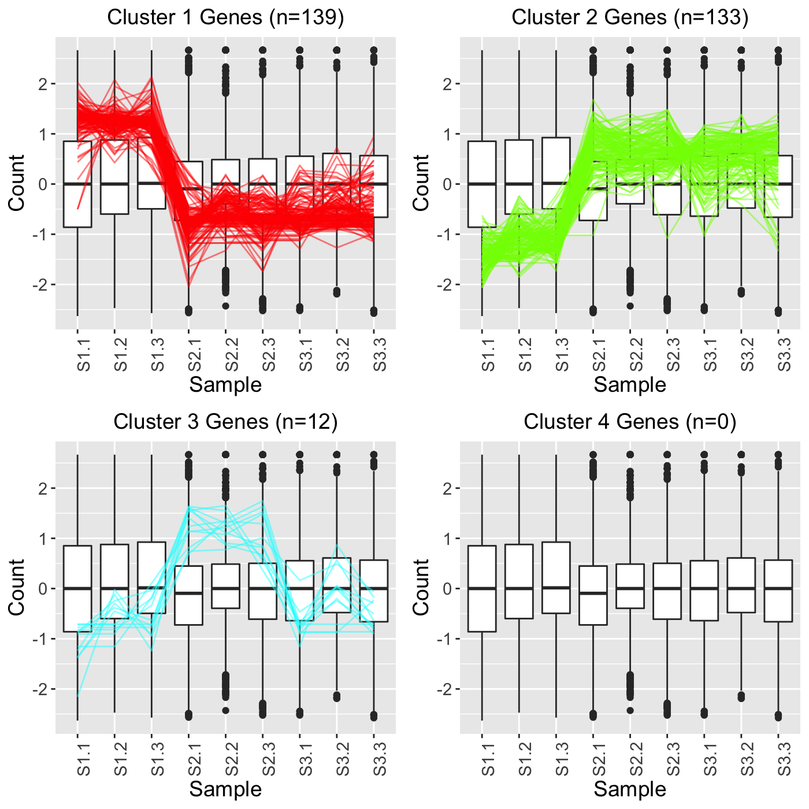
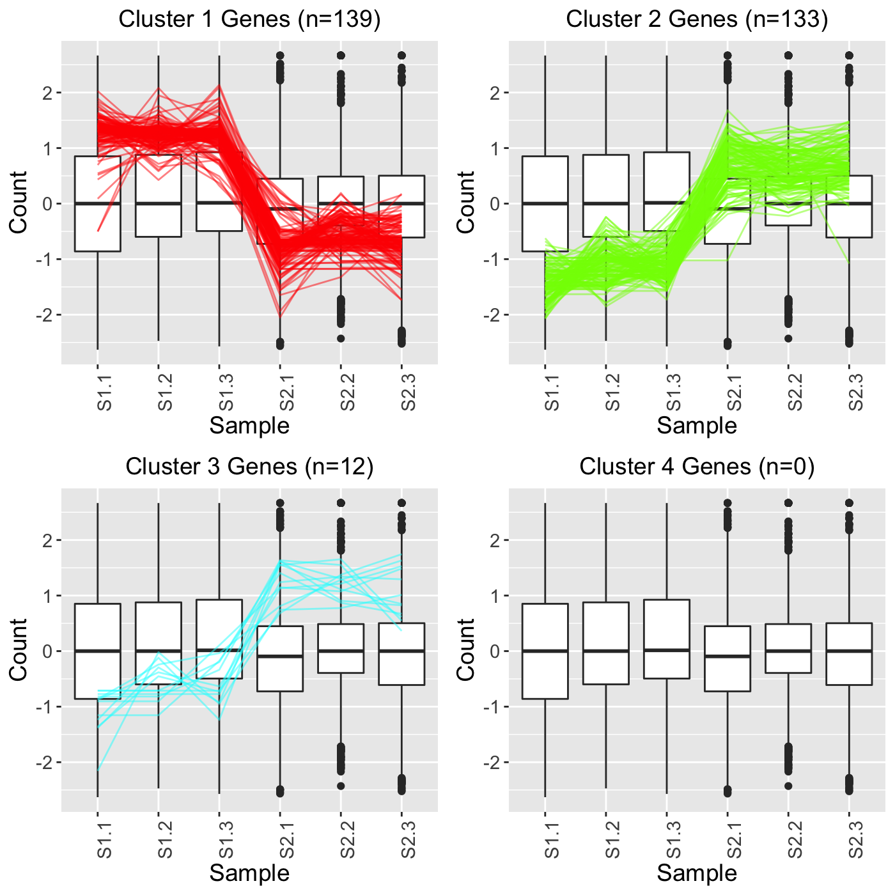
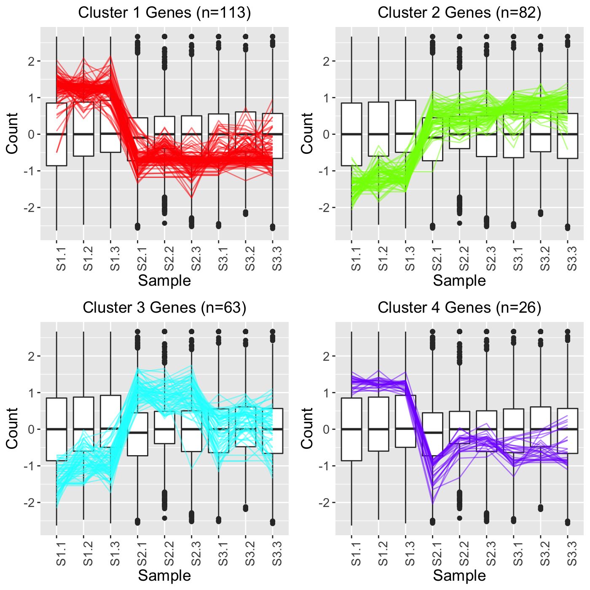

Three clustering approaches
The bigPint package incorporates a function plotClusters() for users to conduct hierarchical clustering analyses on their data. This is accomplished through the hclust() and cutree() functions in the stats package. By default, the resulting clusters will be plotted as parallel coordinate lines superimposed onto side-by-side boxplots showing the full dataset. This will allow users to quickly view the patterns in the resulting clusters. There are three main approaches to using the plotClusters() function:
Approach 1: The clusters are determined by clustering only on a subset of data (such as significant genes). Only the significant genes are overlaid as parallel coordinate lines.
Approach 2: The clusters are determined by clustering the full dataset. Then, only a subset of data (such as significant genes) are overlaid as parallel coordinate lines.
Approach 3: The clusters are determined by clustering the full dataset. All genes are overlaid as parallel coordinate lines.
We will now show examples for each of these three main approaches and discuss a few additional options in the plotClusters() function.
Approach 1
Below, we read in the soybean iron metabolism dataset and perform a logarithm on it (Lauter and Graham 2016). We determine that this dataset contains 5,604 genes. We also determine that this dataset has 113 genes that have FDR < 1e-7 (n = 113). We will consider these our 113 significant genes of interest.
library(grid) library(matrixStats) library(ggplot2) library(bigPint) data("soybean_ir_sub") data("soybean_ir_sub_metrics") soybean_ir_sub[,-1] <- log(soybean_ir_sub[,-1]+1) nrow(soybean_ir_sub)
## [1] 5604## [1] 113We then perform a hierarchical clustering of size four. By setting the clusterAllData parameter to a value of FALSE, our clustering algorithm only considers the 113 significant genes of interest. As a side note, we use the default agglomeration method “ward.D”. We then overlay these 113 genes as parallel coordinate lines across the full dataset represented as side-by-side boxplots.
colList = c("#00A600FF", rainbow(5)[c(1,4,5)]) ret <- plotClusters(data=soybean_ir_sub, dataMetrics = soybean_ir_sub_metrics, nC=4, colList = colList, clusterAllData = FALSE, threshVal = 1e-7, saveFile = FALSE) names(ret)
## [1] "N_P_4"grid.draw(ret[["N_P_4"]])

Approach 2
We can perform a similar analysis as we did before, only now we will set the clusterAllData parameter to a value of TRUE. This means our four clusters will be created considering all genes in the data (n = 5,604). The clusters will then represent the four main patterns in the full dataset. After that, we will only overlay the 113 significant genes as parallel coordinate lines across the full dataset represented as side-by-side boxplots. Note that Cluster 1 did not contain any of the 113 significant genes.
ret <- plotClusters(data=soybean_ir_sub, dataMetrics = soybean_ir_sub_metrics, nC=4, colList = colList, clusterAllData = TRUE, threshVal = 1e-7, saveFile = FALSE) grid.draw(ret[["N_P_4"]])

Approach 3
In this last approach, we will perform hierarchical clustering on all 5,604 genes in the data and also overlay all 5,604 genes as parallel coordinate lines. We do not create any subset of genes (such as significant genes) because we leave the dataMetrics object with its default value of NULL.
ret <- plotClusters(data=soybean_ir_sub, nC=4, colList = colList, clusterAllData = TRUE, saveFile = FALSE) grid.draw(ret[["N_P_4"]])

As a side note, we can use the output from Approach 3 to better understand how Approach 2 worked. Basically, in Approach 2, all 5,604 genes were used in the clustering algorithm to create four clusters. These resulted in the cluster sizes shown in Approach 3: That is, Cluster 1 had 2,334 genes; Cluster 2 had 1,997 genes; Cluster 3 had 1,992 genes; and Cluster 4 had 881 genes. However, at that point, Approach 2 only plotted the 113 significant genes. This means that none of 2,334 genes in Cluster 1 were significant; 44 of the 1,997 genes in Cluster 2 were significant; 33 of the 1,992 genes in Cluster 3 were significant; and 36 of the 881 genes in Cluster 4 were significant.
Standardization
When visualizing hierarchical clustering of genes, it is often recommended to consider the standardized values of read counts (Chandrasekhar, Thangavel, and Elayaraja 2012). Below is an example of standardizing gene read counts and plotting their clusters as parallel coordinate plots superimposed onto side-by-side boxplots. The standardization transforms each gene to have a mean of zero and a standard deviation of one across its samples. This example uses the soybean cotyledon dataset, which has three treatment groups (S1, S2, and S3) (Brown and Hudson 2015). Only two treatment pairs (S1 and S2; S1 and S3) return significant genes. As a result, our ret object will have these two comparisons.
data(soybean_cn_sub) data(soybean_cn_sub_metrics) soybean_cn_sub_st <- as.data.frame(t(apply(as.matrix(soybean_cn_sub[,-1]), 1, scale))) soybean_cn_sub_st$ID <- as.character(soybean_cn_sub$ID) soybean_cn_sub_st <- soybean_cn_sub_st[,c(length(soybean_cn_sub_st), 1:length(soybean_cn_sub_st)-1)] colnames(soybean_cn_sub_st) <- colnames(soybean_cn_sub) nID <- which(is.nan(soybean_cn_sub_st[,2])) soybean_cn_sub_st[nID,2:length(soybean_cn_sub_st)] <- 0 ret <- plotClusters(data=soybean_cn_sub_st, dataMetrics = soybean_cn_sub_metrics, nC=4, colList = c("#00A600FF", "#CC00FFFF", "red", "darkorange"), lineSize = 0.5, lineAlpha = 1, clusterAllData = FALSE, aggMethod = "average", yAxisLabel = "Standardized read count", saveFile = FALSE)
## [1] "S2_S3: There were no significant genes"names(ret)
## [1] "S1_S2_4" "S1_S3_4" "S2_S3_4"grid.draw(ret[["S1_S2_4"]])

grid.draw(ret[["S1_S3_4"]])

Verbose option
In some cases, users may wish to use the plotClusters() function to create clusters and then save these clusters to use for other purposes later, such as overlaying them onto scatterplot matrices, litre plots, and volcano plots. The gene IDs of the parallel coordinate lines in each cluster can be saved as .rds files for this purpose by setting the verbose option to a value of TRUE. Below is an example of this:
plotClusters(data=soybean_cn_sub_st, dataMetrics = soybean_cn_sub_metrics, nC=4, colList = c("#00A600FF", "#CC00FFFF", "red", "darkorange"), lineSize = 0.5, lineAlpha = 1, clusterAllData = FALSE, aggMethod = "average", yAxisLabel = "Standardized read count", verbose = TRUE)
Running the command above will save numerous files into the outDir location. The default location is a temporary directory. You can find the exact pathway of this temporary directory by simply typing tempdir() into your R console. This temporary directory and the files within it remain the same until you close your R session; at that point, a new temporary directory will be created. After running the above command, you should find the following files in your temporary directory:
S1_S2_4_1.rds (10 gene IDs in Cluster 1 in S1 versus S2 comparison)
S1_S2_4_1.jpg (Individual plot of Cluster 1 in S1 versus S2 comparison)
S1_S2_4_2.rds (3 gene IDs in Cluster 1 in S1 versus S2 comparison)
S1_S2_4_2.jpg (Individual plot of Cluster 2 in S1 versus S2 comparison)
S1_S2_4_3.rds (2 gene IDs in Cluster 1 in S1 versus S2 comparison)
S1_S2_4_3.jpg (Individual plot of Cluster 3 in S1 versus S2 comparison)
S1_S2_4_4.rds (1 gene IDs in Cluster 1 in S1 versus S2 comparison)
S1_S2_4_4.jpg (Individual plot of Cluster 4 in S1 versus S2 comparison)
S1_S2_4.jpg (Plot of all four clusters in S1 versus S2 comparison)
S1_S3_4_1.rds (19 gene IDs in Cluster 1 in S1 versus S3 comparison)
S1_S3_4_1.jpg (Individual plot of Cluster 1 in S1 versus S3 comparison)
S1_S3_4_2.rds (7 gene IDs in Cluster 2 in S1 versus S3 comparison)
S1_S3_4_2.jpg (Individual plot of Cluster 2 in S1 versus S3 comparison)
S1_S3_4_3.rds (2 gene IDs in Cluster 3 in S1 versus S3 comparison)
S1_S3_4_3.jpg (Individual plot of Cluster 3 in S1 versus S3 comparison)
S1_S3_4_4.rds (2 gene IDs in Cluster 4 in S1 versus S3 comparison)
S1_S3_4_4.jpg (Individual plot of Cluster 4 in S1 versus S3 comparison)
S1_S3_4.jpg (Plot of all four clusters in S1 versus S3 comparison)
At this point, we can use any of the .rds files to examine the genes represented in the clustered parallel coordinate plots. For instance, we can read in the 19 Cluster 1 genes in the S1 versus S3 comparison as follows:
And check its contents contain the 19 gene IDs.
S1S3Cluster1## [1] "Glyma18g00690.1" "Glyma08g44110.1" "Glyma01g26570.1" "Glyma07g09700.1"
## [5] "Glyma02g40610.1" "Glyma17g17970.1" "Glyma19g26250.1" "Glyma10g34630.1"
## [9] "Glyma14g14220.1" "Glyma19g26710.1" "Glyma03g29150.1" "Glyma08g19245.1"
## [13] "Glyma07g01730.2" "Glyma18g25845.1" "Glyma08g22380.1" "Glyma20g30460.1"
## [17] "Glyma12g10960.1" "Glyma16g08810.1" "Glyma18g42630.2"Then, we can overlay these 19 genes from Cluster 1 in the S1 versus S3 comparison as points onto the scatterplot matrix. This step can give us another perspective of these 19 genes. We may wish to use the same color (green) that we did in the parallel coordinate plots above and add an informative plot title.
ret <- plotSM(data = soybean_cn_sub_st, geneList = S1S3Cluster1, pointColor = "#00A600FF", saveFile = FALSE) ret[["S1_S3"]] + ggtitle("Cluster 1 Genes (n=19)")

Pre-determined clusters
Some users may perform clustering using other software and may wish to simply overlay those clusters as parallel coordinate plots using the bigPint package. This can be achieved in the plotClusters() function using the geneLists variable. As an example, let us read in three clusters that each contain a character array of gene IDs. Hypothetically, these three clusters may have been created in another software package and we simply now wish to plot them out using the bigPint graphics. We see that the first cluster contains 7 gene IDs and the last two clusters each contain 2 gene IDs.
S1S3Cluster2 <- readRDS(paste0(tempdir(), "/S1_S3_4_2.rds")) S1S3Cluster3 <- readRDS(paste0(tempdir(), "/S1_S3_4_3.rds")) S1S3Cluster4 <- readRDS(paste0(tempdir(), "/S1_S3_4_4.rds"))
S1S3Cluster2## [1] "Glyma06g12670.1" "Glyma12g32460.1" "Glyma17g09850.1" "Glyma18g52920.1"
## [5] "Glyma01g24710.1" "Glyma04g39880.1" "Glyma05g27450.2"S1S3Cluster3## [1] "Glyma04g37510.1" "Glyma03g19880.1"S1S3Cluster4## [1] "Glyma08g11570.1" "Glyma08g19290.1"We can now plot these three clusters directly as parallel coordinate lines superimposed on side-by-side boxplots as follows:
ret <- plotClusters(data=soybean_cn_sub_st, geneLists = list(S1S3Cluster2, S1S3Cluster3, S1S3Cluster4), lineAlpha = 1, lineSize = 0.5) grid.draw(ret[["S1_S3_3"]])

Three treatment groups
We note that, when there are more than two treatment groups, users can decide whether to plot clustering results onto just the pair of treatment groups that were used in the clustering analysis or onto all treatment groups in the data nonetheless. This can be tailored using the showPairs parameter. When set to the default value of TRUE, only the treatment pair that was used to generate the clustering results is shown. Below are four examples illustrating this concept using the standardized cotyledon soybean dataset we read into the session earlier (soybean_cn_sub_st).
In the first example, we set clusterAllData to TRUE and showPairs to FALSE. Since we set clusterAllData to TRUE, clustering analysis is performed on all 7332 genes in the data. After each of the 7332 genes is assigned to one of the clusters, only the 284 significant genes are plotted as parallel coordinate lines. Note that retTF below contains S1_S2, S1_S3, and S2_S3 comparisons but that we only show S1_S2 below for simplicity. Since we set showPairs to FALSE, we do not restrict the output for each pairwise comparison to only show the treatment pair in question. Hence, below we see the S1, S2, and S3 output.
retTF <- plotClusters(soybean_cn_sub_st, soybean_cn_sub_metrics, threshVar="PValue", threshVal = 0.05, nC = 4, lineSize = 0.5, verbose = TRUE, clusterAllData = TRUE, showPairs = FALSE, vxAxis = TRUE) grid.draw(retTF[["S1_S2_4"]])

In the second example, we still set clusterAllData to TRUE but we now also set showPairs to TRUE. Since we set clusterAllData to TRUE, clustering analysis is performed on all 7332 genes in the data. After each of the 7332 genes is assigned to one of the clusters, only the 284 significant genes are plotted as parallel coordinate lines. Note that retTT below contains S1_S2, S1_S3, and S2_S3 comparisons but that we only show S1_S2 below for simplicity. Since we set showPairs to TRUE, we only plot the treatment pair in question for each pairwise comparison. Hence, below we only see the S1 and S2 output.
retTT <- plotClusters(soybean_cn_sub_st, soybean_cn_sub_metrics, threshVar="PValue", threshVal = 0.05, nC = 4, lineSize = 0.5, verbose = TRUE, clusterAllData = TRUE, showPairs = TRUE, vxAxis = TRUE) grid.draw(retTT[["S1_S2_4"]])

In the third example, we set clusterAllData to FALSE and showPairs to FALSE. Since we set clusterAllData to FALSE, clustering analysis is performed on only the 284 significant genes, which are then plotted as parallel coordinate lines. Note that retFF below contains S1_S2, S1_S3, and S2_S3 comparisons but that we only show S1_S2 below for simplicity. Since we set showPairs to FALSE, we do not restrict the output for each pairwise comparison to only show the treatment pair in question. Hence, below we see the S1, S2, and S3 output.
retFF <- plotClusters(soybean_cn_sub_st, soybean_cn_sub_metrics, threshVar="PValue", threshVal = 0.05, nC = 4, lineSize = 0.5, verbose = TRUE, clusterAllData = FALSE, showPairs = FALSE, vxAxis = TRUE) grid.draw(retFF[["S1_S2_4"]])

In the fourth example, we still set clusterAllData to FALSE but we now set showPairs to TRUE. Since we set clusterAllData to FALSE, clustering analysis is performed on only the 284 significant genes, which are then plotted as parallel coordinate lines. Note that retFT below contains S1_S2, S1_S3, and S2_S3 comparisons but that we only show S1_S2 below for simplicity. Since we set showPairs to TRUE, we only plot the treatment pair in question for each pairwise comparison. Hence, below we only see the S1 and S2 output.
retFT <- plotClusters(soybean_cn_sub_st, soybean_cn_sub_metrics, threshVar="PValue", threshVal = 0.05, nC = 4, lineSize = 0.5, verbose = TRUE, clusterAllData = FALSE, showPairs = TRUE, vxAxis = TRUE) grid.draw(retFT[["S1_S2_4"]])
SummarizedExperiment version
Below are the corresponding code blocks from everything above that now use the SummarizedExperiment object (dataSE) instead of the data and dataMetrics objects.
Approach 1
library(grid) library(matrixStats) library(ggplot2) library(bigPint) library(DelayedArray) library(SummarizedExperiment) data("se_soybean_ir_sub") assay(se_soybean_ir_sub) <- log(as.data.frame(assay(se_soybean_ir_sub))+1) nrow(se_soybean_ir_sub)
length(which(as.data.frame(rowData(se_soybean_ir_sub))$N_P.FDR < 1e-7))
colList = c("#00A600FF", rainbow(5)[c(1,4,5)]) ret <- plotClusters(dataSE=se_soybean_ir_sub, nC=4, colList = colList, clusterAllData = FALSE, threshVal = 1e-7, saveFile = FALSE) names(ret) grid.draw(ret[["N_P_4"]])
Approach 2
ret <- plotClusters(dataSE=se_soybean_ir_sub, nC=4, colList = colList, clusterAllData = TRUE, threshVal = 1e-7, saveFile = FALSE) grid.draw(ret[["N_P_4"]])
Approach 3
se_soybean_ir_sub_nm <- se_soybean_ir_sub rowData(se_soybean_ir_sub_nm) <- NULL ret <- plotClusters(dataSE=se_soybean_ir_sub_nm, nC=4, colList = colList, clusterAllData = TRUE, saveFile = FALSE) grid.draw(ret[["N_P_4"]])
Standardization
data(se_soybean_cn_sub) se_soybean_cn_sub_st = se_soybean_cn_sub assay(se_soybean_cn_sub_st) <-as.data.frame(t(apply(as.matrix(as.data.frame( assay(se_soybean_cn_sub))), 1, scale))) nID <- which(is.nan(as.data.frame(assay(se_soybean_cn_sub_st))[,1])) assay(se_soybean_cn_sub_st)[nID,] <- 0
ret <- plotClusters(dataSE=se_soybean_cn_sub_st, nC=4, colList = c("#00A600FF", "#CC00FFFF", "red", "darkorange"), lineSize = 0.5, lineAlpha = 1, clusterAllData = FALSE, aggMethod = "average", yAxisLabel = "Standardized read count", saveFile = FALSE) names(ret) grid.draw(ret[["S1_S2_4"]]) grid.draw(ret[["S1_S3_4"]])
Verbose option
plotClusters(dataSE=se_soybean_cn_sub_st, nC=4, colList = c("#00A600FF", "#CC00FFFF", "red", "darkorange"), lineSize = 0.5, lineAlpha = 1, clusterAllData = FALSE, aggMethod = "average", yAxisLabel = "Standardized read count", verbose = TRUE)
ret <- plotSM(dataSE = se_soybean_cn_sub_st, geneList = S1S3Cluster1, pointColor = "#00A600FF", saveFile = FALSE) ret[["S1_S3"]] + ggtitle("Cluster 1 Genes (n=19)")
Pre-determined clusters
S1S3Cluster2 <- readRDS(paste0(tempdir(), "/S1_S3_4_2.rds")) S1S3Cluster3 <- readRDS(paste0(tempdir(), "/S1_S3_4_3.rds")) S1S3Cluster4 <- readRDS(paste0(tempdir(), "/S1_S3_4_4.rds"))
S1S3Cluster2 S1S3Cluster3 S1S3Cluster4
ret <- plotClusters(dataSE=se_soybean_cn_sub_st, geneLists = list(S1S3Cluster2, S1S3Cluster3, S1S3Cluster4), lineAlpha = 1, lineSize = 0.5) grid.draw(ret[["S1_S3_3"]])
Three treatment groups
retTF <- plotClusters(dataSE=se_soybean_cn_sub_st, threshVar="PValue" ,threshVal = 0.05, nC = 4, lineSize = 0.5, verbose = TRUE, clusterAllData = TRUE, showPairs = FALSE, vxAxis = TRUE) grid.draw(retTF[["S1_S2_4"]])
retTT <- plotClusters(dataSE=se_soybean_cn_sub_st, threshVar="PValue" ,threshVal = 0.05, nC = 4, lineSize = 0.5, verbose = TRUE, clusterAllData = TRUE, showPairs = TRUE, vxAxis = TRUE) grid.draw(retTT[["S1_S2_4"]])
retFF <- plotClusters(dataSE=se_soybean_cn_sub_st, threshVar="PValue" ,threshVal = 0.05, nC = 4, lineSize = 0.5, verbose = TRUE, clusterAllData = FALSE, showPairs = FALSE, vxAxis = TRUE) grid.draw(retFF[["S1_S2_4"]])
retFT <- plotClusters(dataSE=se_soybean_cn_sub_st, threshVar="PValue" ,threshVal = 0.05, nC = 4, lineSize = 0.5, verbose = TRUE, clusterAllData = FALSE, showPairs = TRUE, vxAxis = TRUE) grid.draw(retFT[["S1_S2_4"]])
References
Brown, Anne V., and Karen A. Hudson. 2015. “Developmental Profiling of Gene Expression in Soybean Trifoliate Leaves and Cotyledons.” BMC Plant Biology 15 (1): 169.
Chandrasekhar, T, K Thangavel, and E Elayaraja. 2012. “Effective Clustering Algorithms for Gene Expression Data.” International Journal of Computer Applications 1201: 4914.
Lauter, AN Moran, and MA Graham. 2016. “NCBI Sra Bioproject Accession: PRJNA318409.”